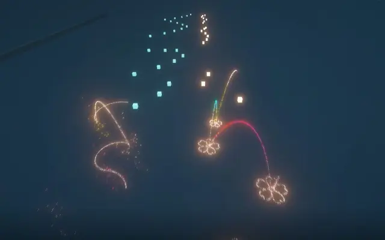

这里是我的一部分视频作品，大部分是红石音乐。
你可以点击图片进入BILIBILI进行观看
以后将会在主页添加游戏作品，敬请期待
绀珠传预告 ~ Legacy of Lunatic Kingdom
第一次参加华灯宴的作品预告
少见的没有水的作品
应该说参加的过程是很曲折的
千本樱 ~ Senbon Zakura
第一次尝试缝合特效
具有一定创新意义
熙攘市场今何在 ~ Immemorial Marketeers
是那时刚出的東方虹龙洞六面曲
当时觉得好听，后面便觉得一般了，不那么耐听的感觉
第一次尝试全乐器制作
音质有些塑料，早期用的是微软波表的音源
深海少女 ~ Shinkai Shoujo ver2.00
曾经的播放巅峰，让我不禁得意过一段时间
纪念让我入坑的红乐视频
受到SOMA的影响我才加入了制作视频的行列

胧月 ~ Hazy Moon
非常喜欢的一首曲子
歌词很美，给人很安静的感觉
同时从这个视频开始我采用新格式
夜、萤火虫与你
我开始制作粒子线
回想起那个每天写程序写到凌晨三点的暑假
用的是python自带的IDLE，用着初中生的头脑
深海少女 ~ Shinkai Shoujo
一切的开始
当然你去看History页面的时候可以看见有比这更早的视频
但是已经失效了，这里便不再收录其中
YOUMUSC